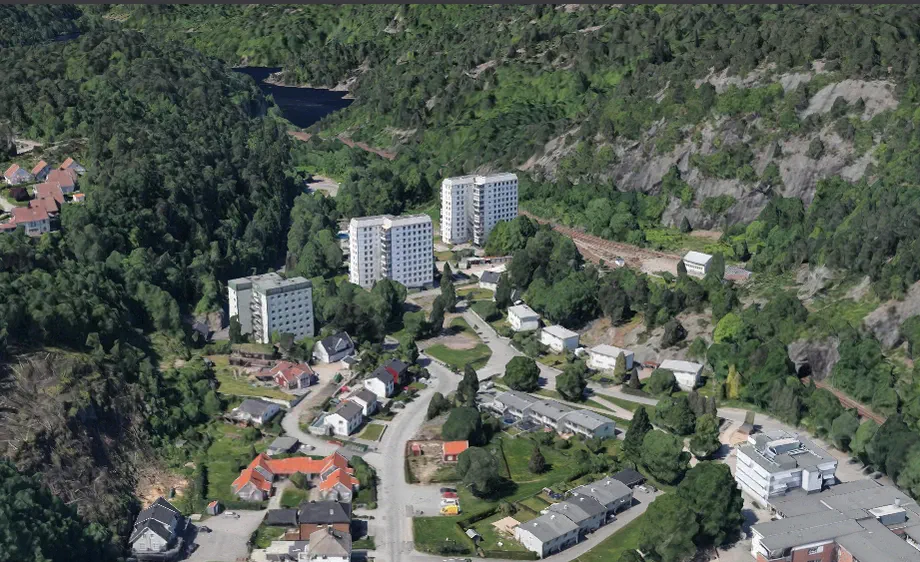
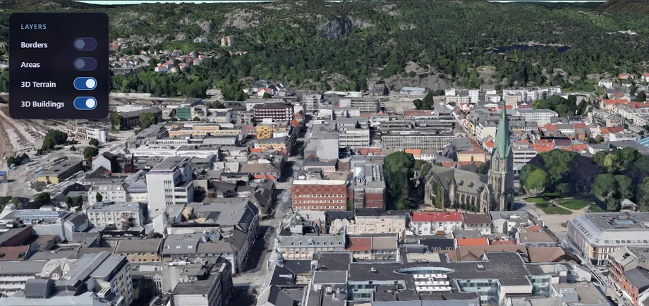

KI og eiendom
LuksusEiendom
Et visuelt eiendomskonsept som bruker KI til å forbedre boligbilder og gjør før-og-etter-resultatet til selve opplevelsen.
Se nettsidenUtvalgte arbeider
Fire ulike problemrom — fra visuell KI til kart, geodata og kritiske systemer. Hvert prosjekt kombinerer tydelig design med teknologi bygget rundt menneskene som skal bruke den.
KI og eiendom
Et visuelt eiendomskonsept som bruker KI til å forbedre boligbilder og gjør før-og-etter-resultatet til selve opplevelsen.
Beredskapskart
Et responsivt webkart som hjelper innbyggere med å finne nærmeste beredskapsressurs når tiden er kritisk.
Kritisk infrastruktur
Et databasesystem for sikker registrering, validering og håndtering av luftfartshindre for samfunnskritiske aktører.


Geospatial plattform
Et innovativt geospatialt prosjekt som utforsker moderne verktøy og biblioteker for å bygge en unik interaktiv plattform for visualisering av sanntidsdata, havnivåstigning og geografiske analyser i Norge.
Driftet på Azure Static Web Apps med CI/CD via GitHub Actions.